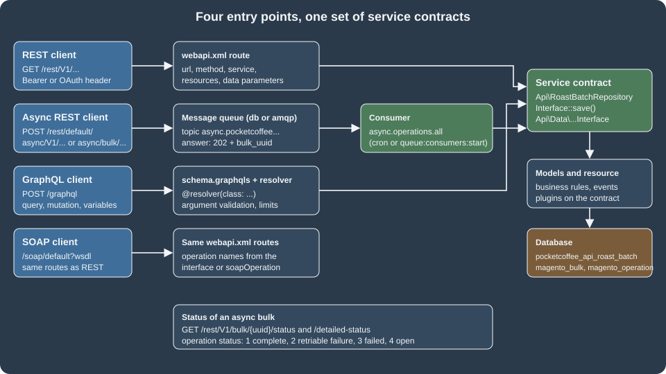

REST and GraphQL APIs
|
This content was generated with the assistance of AI and should be verified against the official documentation before being relied on in production. |
Magento has one rule for its web APIs: the business logic lives in PHP service contracts (interfaces in a module’s
Api directory and the data interfaces in Api\Data), and every HTTP surface is a thin description of how to reach
them. A route in etc/webapi.xml makes a service method reachable as REST and SOAP, and the same route is
automatically available as an asynchronous and a bulk endpoint; a schema.graphqls file with @resolver directives
makes a service reachable through GraphQL. This page builds one small, complete example of every surface in a single
module for the Pocket Coffee shop (a roast batch per SKU: the roast date shown on the product page), runs it against
a real store, and then covers the pieces that surround it: searching with searchCriteria, filtering responses,
asynchronous and bulk calls with their status endpoints, GraphQL schema extension and batch resolvers, and the limits
that Magento 2.4.9 added to GraphQL.
The version baseline is Magento 2.4.9 (released 2026-05-12), checked on 2026-10-27 against the Adobe developer
documentation. Every example below ran on Mage-OS 3.6.0 (based on Magento 2.4.9, PHP 8.5.12, developer mode, MariaDB
11.8, OpenSearch 3, Valkey 9) in a local Docker store, as the module PocketCoffee_Api. Mage-OS is a distribution of
the Open Source code and is not byte-identical to Adobe’s release, so the places where it differed from the Adobe
documentation are called out. Everything on this page applies to Open Source and to Adobe Commerce on-premises and on
Cloud (PaaS). Adobe Commerce as a Cloud Service has a different REST and authentication surface (Adobe IMS, and a
different asynchronous URL pattern) described where it differs and in
API Authentication. The module patterns of this page (service
contracts, repositories, di.xml preferences) are explained in
Service Contracts and Repositories and
Dependency Injection, and the PHP language basics are on the
PHP section of this site.

The entry points
| Surface | URL pattern | Defined by |
|---|---|---|
REST |
|
|
Asynchronous REST |
|
The |
Bulk REST |
|
The same routes, accepting an array of request bodies |
GraphQL |
|
|
SOAP |
|
The same |
Swagger |
|
Generated from the service contracts |
The store view code in a REST URL defaults to default; /rest/V1/products and /rest/default/V1/products are the
same call. A store-scoped URL decides which store view’s attribute values are read and written. For writes, the
asynchronous endpoint page documents this rule: a PUT without a store code updates the default store’s values only,
with all it updates every store scope, and with a store view code only that store view; a POST without a store
code creates values globally for each scope.
REST
Anatomy of a request
-
Content type. Request bodies are JSON (
Content-Type: application/json) or XML. APOSTwithout a content type is refused with HTTP 400 ("Server cannot understand Content-Type HTTP header media type application/x-www-form-urlencoded"; observed). The response format follows theAcceptheader: JSON by default, XML withAccept: application/xml. -
Authentication. Anonymous routes need nothing; every other route needs a bearer token or an OAuth 1.0a signature. The token types are covered in API Authentication.
-
Body shape. The JSON body of a
POSTorPUTis an object whose keys are the PHP parameter names of the service method. A methodsave(RoastBatchInterface $batch)expects{"batch": {...}}, and a body without thebatchkey is refused with"batch" is required. Enter and try again.(observed). This wrapper key is the most common source of 400 errors for newcomers. -
Errors. An error is a JSON object with
message, optionalparameters(substituted into placeholders such as%1and%fieldNameby the client) and, in developer mode only, atrace. Exceptions map to statuses:NoSuchEntityExceptiongives 404,InputExceptionand other validation errors give 400, a missing permission or an invalid token gives 401 (or 403 in some cases), and an unexpected exception gives 500. Production mode omits the trace; developer mode includes file names and arguments, which is one more reason never to run a public store in developer mode.
The module
The example module has this layout. Only the files that matter for the APIs are shown.
app/code/PocketCoffee/Api/
├── registration.php
├── composer.json
├── Api/
│ ├── Data/RoastBatchInterface.php
│ ├── GreetingInterface.php
│ └── RoastBatchRepositoryInterface.php
├── Model/
│ ├── Greeting.php
│ ├── RoastBatch.php
│ ├── RoastBatchRepository.php
│ └── Resolver/{RoastBatch,SetRoastBatch,ProductRoastDateBatch}.php
├── ViewModel/RoastBadge.php
├── etc/
│ ├── module.xml
│ ├── db_schema.xml
│ ├── db_schema_whitelist.json
│ ├── acl.xml
│ ├── di.xml
│ ├── webapi.xml
│ └── schema.graphqls
└── view/frontend/{layout,templates}/...Source: Configure services as web API
The data interface describes the payload. The framework builds the JSON and XML (de)serialisation, the Swagger schema and the SOAP WSDL from these interfaces and their docblocks, which is why the docblocks are not decoration.
<?php
declare(strict_types=1);
namespace PocketCoffee\Api\Api\Data;
/**
* A roast batch of a product.
*
* @api
*/
interface RoastBatchInterface
{
/**
* @return string
*/
public function getSku(): string;
/**
* @param string $sku
* @return $this
*/
public function setSku(string $sku): self;
/**
* @return string Roast date as YYYY-MM-DD
*/
public function getRoastDate(): string;
/**
* @param string $roastDate Roast date as YYYY-MM-DD
* @return $this
*/
public function setRoastDate(string $roastDate): self;
/**
* @return string|null
*/
public function getOrigin(): ?string;
/**
* @param string|null $origin
* @return $this
*/
public function setOrigin(?string $origin): self;
}The repository interface is the service contract that the routes expose. Three methods cover read, write and delete, and each documents the exceptions it throws.
<?php
declare(strict_types=1);
namespace PocketCoffee\Api\Api;
use Magento\Framework\Exception\CouldNotSaveException;
use Magento\Framework\Exception\NoSuchEntityException;
use PocketCoffee\Api\Api\Data\RoastBatchInterface;
/**
* Roast batch repository.
*
* @api
*/
interface RoastBatchRepositoryInterface
{
/**
* Get the roast batch of a SKU.
*
* @param string $sku
* @return \PocketCoffee\Api\Api\Data\RoastBatchInterface
* @throws NoSuchEntityException
*/
public function get(string $sku): RoastBatchInterface;
/**
* Create or replace a roast batch.
*
* @param \PocketCoffee\Api\Api\Data\RoastBatchInterface $batch
* @return \PocketCoffee\Api\Api\Data\RoastBatchInterface
* @throws CouldNotSaveException
*/
public function save(RoastBatchInterface $batch): RoastBatchInterface;
/**
* Delete the roast batch of a SKU.
*
* @param string $sku
* @return bool
* @throws NoSuchEntityException
*/
public function deleteBySku(string $sku): bool;
}The docblock rules, from the official page, are strict because the API metadata is read from them: every parameter
needs @param type $name and the method needs @return type; scalar types are mixed, bool, string, int,
float and double; arrays add [] to the type; object types are written as fully qualified class or interface
names even when the class is imported with use (the interfaces above write
\PocketCoffee\Api\Api\Data\RoastBatchInterface for that reason); and no parameter may be named item, which SOAP
processing removes. Return types that are interfaces are what make nested objects appear in the Swagger document.
The documentation also notes that REST only instantiates constructor parameters that are simple types or
*\Api\Data\*Interface classes, and that Adobe Commerce 2.4.9 and the earlier supported versions were patched to
validate this.
The implementation is ordinary PHP. This repository keeps one row per SKU in a table declared with db_schema.xml
(see Declarative Schema and Patches) and uses the generated
data interface factory:
<?php
declare(strict_types=1);
namespace PocketCoffee\Api\Model;
use Magento\Framework\App\ResourceConnection;
use Magento\Framework\Exception\CouldNotSaveException;
use Magento\Framework\Exception\InputException;
use Magento\Framework\Exception\NoSuchEntityException;
use PocketCoffee\Api\Api\Data\RoastBatchInterface;
use PocketCoffee\Api\Api\Data\RoastBatchInterfaceFactory;
use PocketCoffee\Api\Api\RoastBatchRepositoryInterface;
class RoastBatchRepository implements RoastBatchRepositoryInterface
{
private const TABLE = 'pocketcoffee_api_roast_batch';
public function __construct(
private readonly ResourceConnection $resource,
private readonly RoastBatchInterfaceFactory $factory
) {
}
public function get(string $sku): RoastBatchInterface
{
$connection = $this->resource->getConnection();
$row = $connection->fetchRow(
$connection->select()->from($this->resource->getTableName(self::TABLE))->where('sku = ?', $sku)
);
if (!$row) {
throw new NoSuchEntityException(__('No roast batch for SKU "%1".', $sku));
}
return $this->factory->create(['data' => $row]);
}
public function save(RoastBatchInterface $batch): RoastBatchInterface
{
if (!preg_match('/^\d{4}-\d{2}-\d{2}$/', $batch->getRoastDate())) {
throw new InputException(__('"%fieldName" must be a date as YYYY-MM-DD.', ['fieldName' => 'roast_date']));
}
try {
$this->resource->getConnection()->insertOnDuplicate(
$this->resource->getTableName(self::TABLE),
['sku' => $batch->getSku(), 'roast_date' => $batch->getRoastDate(), 'origin' => $batch->getOrigin()],
['roast_date', 'origin']
);
} catch (\Exception $e) {
throw new CouldNotSaveException(__('The roast batch could not be saved.'), $e);
}
return $this->get($batch->getSku());
}
public function deleteBySku(string $sku): bool
{
$this->get($sku);
$this->resource->getConnection()->delete(
$this->resource->getTableName(self::TABLE),
['sku = ?' => $sku]
);
return true;
}
}The data class PocketCoffee\Api\Model\RoastBatch extends Magento\Framework\DataObject and implements
RoastBatchInterface; etc/di.xml binds the interfaces to the implementations with preferences, which is the normal
way to bind a service contract:
<?xml version="1.0"?>
<config xmlns:xsi="http://www.w3.org/2001/XMLSchema-instance" xsi:noNamespaceSchemaLocation="urn:magento:framework:ObjectManager/etc/config.xsd">
<preference for="PocketCoffee\Api\Api\Data\RoastBatchInterface" type="PocketCoffee\Api\Model\RoastBatch"/>
<preference for="PocketCoffee\Api\Api\RoastBatchRepositoryInterface" type="PocketCoffee\Api\Model\RoastBatchRepository"/>
<preference for="PocketCoffee\Api\Api\GreetingInterface" type="PocketCoffee\Api\Model\Greeting"/>
</config>webapi.xml
etc/webapi.xml is the whole REST and SOAP configuration of a module. The reference of what it accepts, from the
Adobe documentation and the Mage-OS XSD:
| Element or attribute | Meaning |
|---|---|
|
One HTTP route. |
|
Optional. Restricts the route to HTTPS |
|
Optional. A SOAP operation name different from the interface method name |
|
The service interface (never the implementation) and the method to call. The implementation is resolved through |
|
Who may call it. |
|
Optional. Supplies or forces a service method argument. With |
The module declares four routes: a public read, a protected write and delete (protected by its own ACL resource), and a customer self-service route that shows how a forced parameter works.
<?xml version="1.0"?>
<routes xmlns:xsi="http://www.w3.org/2001/XMLSchema-instance" xsi:noNamespaceSchemaLocation="urn:magento:module:Magento_Webapi:etc/webapi.xsd">
<!-- Public read: anyone may ask when a SKU was roasted -->
<route url="/V1/pocketcoffee/roast-batches/:sku" method="GET">
<service class="PocketCoffee\Api\Api\RoastBatchRepositoryInterface" method="get"/>
<resources>
<resource ref="anonymous"/>
</resources>
</route>
<!-- Write: admin tokens or integrations that were granted the ACL resource -->
<route url="/V1/pocketcoffee/roast-batches" method="POST">
<service class="PocketCoffee\Api\Api\RoastBatchRepositoryInterface" method="save"/>
<resources>
<resource ref="PocketCoffee_Api::roast_batches_manage"/>
</resources>
</route>
<route url="/V1/pocketcoffee/roast-batches/:sku" method="DELETE">
<service class="PocketCoffee\Api\Api\RoastBatchRepositoryInterface" method="deleteBySku"/>
<resources>
<resource ref="PocketCoffee_Api::roast_batches_manage"/>
</resources>
</route>
<!-- Customer self-service: the customer id comes from the token, never from the client -->
<route url="/V1/pocketcoffee/me/greeting" method="GET">
<service class="PocketCoffee\Api\Api\GreetingInterface" method="forCustomer"/>
<resources>
<resource ref="self"/>
</resources>
<data>
<parameter name="customerId" force="true">%customer_id%</parameter>
</data>
</route>
</routes>The ACL resource used by the write routes is declared in etc/acl.xml, nested inside the standard Catalog resources so
that it appears in the Admin role tree and in the integration permission tree (System > Extensions > Integrations > API):
<?xml version="1.0"?>
<config xmlns:xsi="http://www.w3.org/2001/XMLSchema-instance" xsi:noNamespaceSchemaLocation="urn:magento:framework:Acl/etc/acl.xsd">
<acl>
<resources>
<resource id="Magento_Backend::admin">
<resource id="Magento_Catalog::catalog">
<resource id="PocketCoffee_Api::roast_batches" title="Pocket Coffee roast batches" sortOrder="200">
<resource id="PocketCoffee_Api::roast_batches_manage" title="Manage roast batches" sortOrder="10"/>
</resource>
</resource>
</resource>
</resources>
</acl>
</config>A note on the XSD: Adobe’s 2.4.9 backward-incompatible changes list removes webapi.xsd, webapi_base.xsd,
webapi_merged.xsd and webapi_async.xsd (and about 69 XSD files in total, including csp_whitelist.xsd). Mage-OS
3.6.0 still ships module-webapi/etc/webapi.xsd, and the file above validated against it with xmllint, so this local
check cannot confirm the removal. A module that targets Adobe 2.4.9 should not depend on urn:magento:module:Magento_Webapi:etc/webapi.xsd
resolving in an IDE, and should keep the xsi:noNamespaceSchemaLocation as documentation only.
Running it
After bin/magento module:enable PocketCoffee_Api, bin/magento setup:db-declaration:generate-whitelist
--module-name=PocketCoffee_Api (which writes db_schema_whitelist.json) and bin/magento setup:upgrade, the routes
exist. These calls ran against http://localhost:8082; ${ADMIN_TOKEN} is an admin token obtained as shown in
API Authentication.
# Write: requires the ACL resource PocketCoffee_Api::roast_batches_manage
curl -s -X POST http://localhost:8082/rest/V1/pocketcoffee/roast-batches \
-H "Authorization: Bearer ${ADMIN_TOKEN}" -H 'Content-Type: application/json' \
-d '{"batch":{"sku":"PC-ETH-WHL-250","roast_date":"2026-10-20","origin":"Ethiopia Yirgacheffe"}}'
# {"sku":"PC-ETH-WHL-250","roast_date":"2026-10-20","origin":"Ethiopia Yirgacheffe"}
# Read: anonymous
curl -s http://localhost:8082/rest/V1/pocketcoffee/roast-batches/PC-ETH-WHL-250
curl -s -H 'Accept: application/xml' http://localhost:8082/rest/V1/pocketcoffee/roast-batches/PC-ETH-WHL-250
# <response><sku>PC-ETH-WHL-250</sku><roast_date>2026-10-20</roast_date><origin>Ethiopia Yirgacheffe</origin></response>
# Delete
curl -s -X DELETE http://localhost:8082/rest/V1/pocketcoffee/roast-batches/PC-ETH-WHL-1KG \
-H "Authorization: Bearer ${ADMIN_TOKEN}"
# true| Call | Status | Result |
|---|---|---|
|
404 |
|
|
401 |
|
|
400 |
|
|
400 |
|
|
400 |
|
|
200 |
|
The same route with an admin token |
400 |
|
The same route with |
200 |
|
Messages containing %1 and %fieldName are not a bug in the example: the REST layer returns the template and the
substitution values separately, and clients are expected to merge them.
Searching with searchCriteria
Every collection endpoint of the core modules (/V1/products, /V1/orders, /V1/customers/search, /V1/categories/list
and so on) takes a searchCriteria object serialised into the query string. The pieces:
-
searchCriteria[filter_groups][i][filters][j][field|value|condition_type]: filters inside one group are combined with OR, and groups are combined with AND. Condition types includeeq,neq,like,nlike,in,nin,gt,gteq,lt,lteq,null,notnull,fromandto. -
searchCriteria[sortOrders][i][field|direction]withASCorDESC. -
searchCriteria[pageSize]andsearchCriteria[currentPage]for paging. -
A
fieldsparameter that trims the response to a subset (for examplefields=items[sku,price],total_count), which is the cheapest optimisation of a heavy product response.
curl -s -g "http://localhost:8082/rest/V1/products?searchCriteria[filter_groups][0][filters][0][field]=sku&searchCriteria[filter_groups][0][filters][0][value]=POCKET%25&searchCriteria[filter_groups][0][filters][0][condition_type]=like&searchCriteria[sortOrders][0][field]=name&searchCriteria[pageSize]=5&fields=items[sku,price],total_count" \
-H "Authorization: Bearer ${ADMIN_TOKEN}"
# {"items":[{"sku":"POCKET-001","price":3.5}],"total_count":1}-g turns off curl’s globbing so that the brackets are sent as written, and %25 is the URL-encoded % wildcard of
like. The fields filter is documented on
Retrieve filtered responses. A
product list without a token answered 401 on this store, because /V1/products is protected; the catalog is read
anonymously through GraphQL or the storefront-specific endpoints, not through /V1/products.
A repository’s getList(SearchCriteriaInterface $criteria) is what such an endpoint calls, and a custom collection
endpoint declares it the same way as above and returns a SearchResultsInterface (see
Service Contracts and Repositories).
Schema, Swagger and SOAP
The framework publishes the contracts it reads from the docblocks. The OpenAPI document for one service is at
/rest/all/schema?services=pocketCoffeeApiRoastBatchRepositoryV1: the service id is built from the vendor, the module,
the interface name without its Interface suffix and the API version, in camel case. Run against the
local store it listed the path /V1/pocketcoffee/roast-batches/{sku}, and /swagger (HTTP 200) renders the whole
store’s schema as a browsable page. The SOAP WSDL for the same service
(/soap/default?wsdl&services=pocketCoffeeApiRoastBatchRepositoryV1) answered 200. SOAP remains supported but is not
where new work goes.
Rate limiting
Adobe documents request rate limiting ("backpressure") from 2.4.7 for the payment-related REST endpoints
(guest-carts/.../payment-information, .../order, carts/mine/payment-information, carts/mine/order) and for
GraphQL. It is off by default, needs a Valkey or Redis connection configured with setup:config:set --backpressure-logger=redis ...
and sales/backpressure/enabled set to 1, and is tuned with sales/backpressure/guest_limit,
sales/backpressure/limit and sales/backpressure/period (60, 3600 or 86400 seconds). A limited REST call answers
HTTP 429 with the body {"message":"Too Many Requests","trace":null}, while GraphQL answers HTTP 200 with an error of
category graphql-too-many-requests. It was not enabled in the test store.
Asynchronous and bulk endpoints
Magento_WebapiAsync and Magento_AsynchronousOperations give every POST, PUT and DELETE route two more URLs,
with no extra code: the asynchronous one inserts async after the store view code, and the bulk one inserts
async/bulk. (GET is not supported; PATCH is accepted by the framework but the core implements no PATCH
route.) The request is validated as far as the route and the authorisation, written to the message queue as an
operation tied to a bulk, and answered immediately with HTTP 202 and a bulk_uuid. A consumer named
async.operations.all executes the operations later, calling the same service contract with the same arguments as the
synchronous route would.
# one operation
curl -s -i -X POST http://localhost:8082/rest/default/async/V1/pocketcoffee/roast-batches \
-H "Authorization: Bearer ${ADMIN_TOKEN}" -H 'Content-Type: application/json' \
-d '{"batch":{"sku":"PC-COL-FIL-250","roast_date":"2026-10-23","origin":"Colombia Huila"}}'
# HTTP/1.1 202 Accepted
# {"bulk_uuid":"d99e2240-...","request_items":[{"id":0,"data_hash":"38d3b6...","status":"accepted"}],"errors":false}
# several operations in one request: the body is an array of the usual bodies
curl -s -X POST http://localhost:8082/rest/default/async/bulk/V1/pocketcoffee/roast-batches \
-H "Authorization: Bearer ${ADMIN_TOKEN}" -H 'Content-Type: application/json' \
-d '[{"batch":{"sku":"PC-COL-WHL-1KG","roast_date":"2026-10-23"}},
{"batch":{"sku":"PC-ETH-ESP-250","roast_date":"2026-10-24"}},
{"batch":{"sku":"PC-BAD","roast_date":"soon"}}]'The response fields: bulk_uuid to poll, and per request an id (its index), a data_hash (a SHA-256 of the incoming
message) and a status, which the documentation says is reserved and always accepted; errors is also reserved and
always false. A request refused by validation or authorisation is a normal error response instead. The documentation
does not state the HTTP status of the accepted response; the observed value on Mage-OS 3.6.0 was 202.
At this point nothing has happened yet: the roast batches did not exist after the calls (a GET returned 404) and the
status of every operation was 4 (open). The consumer is the missing piece. In production cron starts it
(the consumers_runner job of the consumers cron group declared by Magento_MessageQueue, see
CLI, Cron and Message Queues); by hand, the Adobe page gives the
command, and --max-messages makes it exit after N messages, which is what makes it usable in a script or a test:
bin/magento queue:consumers:start async.operations.all --max-messages=4After it ran, the three valid roast batches existed and the status endpoints told the story of the bulk:
curl -s http://localhost:8082/rest/V1/bulk/2b53aa1f-.../status -H "Authorization: Bearer ${ADMIN_TOKEN}"
# {"operations_list":[
# {"id":0,"status":1,"result_message":"Service execution success PocketCoffee\\Api\\Model\\RoastBatchRepository::save","error_code":null},
# {"id":1,"status":1,"result_message":"Service execution success ...::save","error_code":null},
# {"id":2,"status":3,"result_message":"\"roast_date\" must be a date as YYYY-MM-DD.","error_code":0}],
# "user_type":2,"bulk_id":"2b53aa1f-...","description":"Topic async.pocketcoffee.api.api.roastbatchrepositoryinterface.save.post",
# "start_time":"2026-10-27 16:57:14","user_id":1,"operation_count":3}The statuses of an operation are 1 complete, 2 retriably failed, 3 not retriably failed, 4 open and 5
rejected (constants of Magento\Framework\Bulk\OperationInterface). A validation exception such as the bad date is not retriable, so it ends as 3 and the other operations of the
bulk are unaffected; a lock wait or deadlock (LockWaitException, DeadlockException, ConnectionException) ends as
retriable. GET /V1/bulk/{uuid}/detailed-status returns the same list with the original serialised request data,
GET /V1/bulk/{uuid}/operation-status/{status} returns the number of operations of the bulk in one status, and
GET /V1/bulk lists the bulks. All of them need the ACL resource Magento_Logging::system_magento_logging_bulk_operations. The topic name shows how Magento derives it: async.
followed by the lower-cased interface class with dots, the method name and the HTTP method. Plugins on the service
method, and webapi_async.xml aliases (a file in which a route can be given a short alias such as createWidget, with the
restriction that a route with path variables cannot be aliased), are the extension points.
Things to know before using asynchronous endpoints:
-
The consumer must run. If cron is not configured, operations stay open forever and the client sees 202 and nothing else.
-
The default queue connection is the database (
magento_operationandqueue_messagetables); with RabbitMQ or ActiveMQ Artemis it uses the broker. The test store used the database queue because no broker was installed. -
Do not rely on the order in which the operations of a bulk run: a bulk of dependent writes (a product, then its stock) belongs in one operation or in plain synchronous calls.
-
On Adobe Commerce as a Cloud Service the URL changes:
asyncgoes after/V1(.../V1/async/products/:sku) and the store view is selected with theStoreheader.
GraphQL
The endpoint
POST /graphql with a JSON body {"query": "...", "variables": {...}} is the normal call. GET /graphql?query=... also
works for queries and is the form that the full page cache and a CDN can cache (the GET response of the test store
carried the X-Magento-Cache-Debug: MISS header and FPC tag; the field below declares itself not cacheable, so the
response was no-store). Headers that matter:
-
Authorization: Bearer <token>for customer-specific data and admin-only operations (see API Authentication). -
Store: <store-view-code>selects the store view, andContent-Currency: <code>the display currency. -
On Adobe Commerce as a Cloud Service the store view is selected with the
Storeheader as well, and authentication uses Adobe IMS headers; the Adobe documentation page on headers lists the rest.
Errors need care: a syntax error answers HTTP 400 (Syntax Error: Unexpected <EOF>), but an error raised by a
resolver answers HTTP 200 with errors[] next to data (observed for authorisation and not-found errors), and
extensions.category classifies it. The categories seen were graphql-authorization, graphql-authentication and
graphql-no-such-entity; the framework also defines graphql-input and graphql-already-exists, and the rate limiter
uses graphql-too-many-requests. A client that only looks at the HTTP status misses every business error.
schema.graphqls
A module extends the schema with etc/schema.graphqls. Mage-OS merges the files of all modules in module load order
(the module’s module.xml should list Magento_GraphQl and any module whose types are extended in <sequence>).
The directives that the framework defines (etc/schema.graphqls of Magento_GraphQl) are @resolver(class: "...")
(the class that resolves the field), @typeResolver(class: "...") (for unions and interfaces),
@doc(description: "..."), @cache(cacheable: false) or @cache(cacheIdentity: "...") (the class that computes
cache tags for the result) and @implementation(class: "...") for custom scalars. Backslashes in class names are doubled inside the SDL string.
# Copyright (c) Pocket Coffee example. Licensed under OSL-3.0.
type Query {
pocketCoffeeRoastBatch(sku: String! @doc(description: "Product SKU")): PocketCoffeeRoastBatch
@resolver(class: "PocketCoffee\\Api\\Model\\Resolver\\RoastBatch")
@doc(description: "Returns the current roast batch of a SKU")
@cache(cacheable: false)
}
type Mutation {
setPocketCoffeeRoastBatch(input: PocketCoffeeRoastBatchInput!): PocketCoffeeRoastBatch
@resolver(class: "PocketCoffee\\Api\\Model\\Resolver\\SetRoastBatch")
@doc(description: "Creates or replaces the roast batch of a SKU. Requires an admin token with the manage ACL resource.")
}
input PocketCoffeeRoastBatchInput {
sku: String! @doc(description: "Product SKU")
roast_date: String! @doc(description: "Roast date, YYYY-MM-DD")
origin: String @doc(description: "Origin of the beans")
}
type PocketCoffeeRoastBatch @doc(description: "A roast batch") {
sku: String
roast_date: String
origin: String
}
interface ProductInterface {
roast_date: String @doc(description: "Roast date of the product") @resolver(class: "PocketCoffee\\Api\\Model\\Resolver\\ProductRoastDateBatch")
}The last block is the idiom for adding a field to a type that another module owns: redeclare the interface or type and
add the field, and the schema merge combines them. Here ProductInterface gains roast_date, which makes the field
available on every product type in products(...) results. Field names follow the Magento convention of snake case
in output types (roast_date) and camel case for operation names (pocketCoffeeRoastBatch).
Resolvers
A resolver implements one of three interfaces: ResolverInterface in Magento\Framework\GraphQl\Query (one branch
or leaf at a time), and, in Magento\Framework\GraphQl\Query\Resolver, BatchResolverInterface (collects all the
requests for the same field in one response and resolves them together) and BatchServiceContractResolverInterface
(batches, and delegates fetching to a service contract). Mutation resolvers implement ResolverInterface.
The query resolver validates input, calls the service contract and translates exceptions into GraphQL exceptions, so that the client sees the right category:
<?php
declare(strict_types=1);
namespace PocketCoffee\Api\Model\Resolver;
use Magento\Framework\Exception\NoSuchEntityException;
use Magento\Framework\GraphQl\Config\Element\Field;
use Magento\Framework\GraphQl\Exception\GraphQlInputException;
use Magento\Framework\GraphQl\Exception\GraphQlNoSuchEntityException;
use Magento\Framework\GraphQl\Query\ResolverInterface;
use Magento\Framework\GraphQl\Schema\Type\ResolveInfo;
use PocketCoffee\Api\Api\RoastBatchRepositoryInterface;
class RoastBatch implements ResolverInterface
{
public function __construct(private readonly RoastBatchRepositoryInterface $repository)
{
}
public function resolve(Field $field, $context, ResolveInfo $info, ?array $value = null, ?array $args = null)
{
if (empty($args['sku'])) {
throw new GraphQlInputException(__('"sku" value must be specified.'));
}
try {
$batch = $this->repository->get($args['sku']);
} catch (NoSuchEntityException $e) {
throw new GraphQlNoSuchEntityException(__($e->getMessage()), $e);
}
return ['sku' => $batch->getSku(), 'roast_date' => $batch->getRoastDate(), 'origin' => $batch->getOrigin()];
}
}The mutation resolver is where authorisation lives, because a GraphQL field has no ACL declaration of its own. It checks the user type of the GraphQL context and the ACL resource explicitly:
<?php
declare(strict_types=1);
namespace PocketCoffee\Api\Model\Resolver;
use Magento\Authorization\Model\UserContextInterface;
use Magento\Framework\AuthorizationInterface;
use Magento\Framework\Exception\LocalizedException;
use Magento\Framework\GraphQl\Config\Element\Field;
use Magento\Framework\GraphQl\Exception\GraphQlAuthorizationException;
use Magento\Framework\GraphQl\Exception\GraphQlInputException;
use Magento\Framework\GraphQl\Query\ResolverInterface;
use Magento\Framework\GraphQl\Schema\Type\ResolveInfo;
use PocketCoffee\Api\Api\Data\RoastBatchInterfaceFactory;
use PocketCoffee\Api\Api\RoastBatchRepositoryInterface;
class SetRoastBatch implements ResolverInterface
{
public function __construct(
private readonly RoastBatchRepositoryInterface $repository,
private readonly RoastBatchInterfaceFactory $factory,
private readonly AuthorizationInterface $authorization
) {
}
public function resolve(Field $field, $context, ResolveInfo $info, ?array $value = null, ?array $args = null)
{
if ($context->getUserType() !== UserContextInterface::USER_TYPE_ADMIN
&& $context->getUserType() !== UserContextInterface::USER_TYPE_INTEGRATION
) {
throw new GraphQlAuthorizationException(__('An admin or integration token is required.'));
}
if (!$this->authorization->isAllowed('PocketCoffee_Api::roast_batches_manage')) {
throw new GraphQlAuthorizationException(__('The token may not manage roast batches.'));
}
$input = $args['input'] ?? [];
try {
$batch = $this->factory->create()
->setSku($input['sku'])
->setRoastDate($input['roast_date'])
->setOrigin($input['origin'] ?? null);
$saved = $this->repository->save($batch);
} catch (LocalizedException $e) {
throw new GraphQlInputException(__($e->getMessage()), $e);
}
return ['sku' => $saved->getSku(), 'roast_date' => $saved->getRoastDate(), 'origin' => $saved->getOrigin()];
}
}The extension of ProductInterface uses a batch resolver. A products query returning 20 products would call a plain
resolver for roast_date 20 times and so run 20 queries (the classic N plus 1 problem); the batch resolver receives all
20 requests at once, runs one SELECT ... WHERE sku IN (...), and answers each request through a BatchResponse:
<?php
declare(strict_types=1);
namespace PocketCoffee\Api\Model\Resolver;
use Magento\Framework\App\ResourceConnection;
use Magento\Framework\GraphQl\Config\Element\Field;
use Magento\Framework\GraphQl\Query\Resolver\BatchResolverInterface;
use Magento\Framework\GraphQl\Query\Resolver\BatchResponse;
use Magento\Framework\GraphQl\Query\Resolver\ContextInterface;
class ProductRoastDateBatch implements BatchResolverInterface
{
public function __construct(private readonly ResourceConnection $resource)
{
}
public function resolve(ContextInterface $context, Field $field, array $requests): BatchResponse
{
$skus = [];
foreach ($requests as $request) {
$skus[] = (string)$request->getValue()['model']->getSku();
}
$connection = $this->resource->getConnection();
$dates = $connection->fetchPairs(
$connection->select()
->from($this->resource->getTableName('pocketcoffee_api_roast_batch'), ['sku', 'roast_date'])
->where('sku IN (?)', array_unique($skus))
);
$response = new BatchResponse();
foreach ($requests as $request) {
$sku = (string)$request->getValue()['model']->getSku();
$response->addResponse($request, $dates[$sku] ?? null);
}
return $response;
}
}The product model is available as $request->getValue()['model'] because the core products resolver puts it in the
parent value. A temporary log line in the resolver showed it was called once with 2 requests for a query returning two
products, and once with 1 for a query returning one. A bad input, such as a missing model, should raise
GraphQlInputException.
Running it
# query, anonymous
curl -s -X POST http://localhost:8082/graphql -H 'Content-Type: application/json' \
-d '{"query":"{ pocketCoffeeRoastBatch(sku: \"PC-ETH-WHL-250\") { sku roast_date origin } }"}'
# {"data":{"pocketCoffeeRoastBatch":{"sku":"PC-ETH-WHL-250","roast_date":"2026-10-20","origin":"Ethiopia Yirgacheffe"}}}
# mutation without a token: HTTP 200 and an error
# {"errors":[{"message":"An admin or integration token is required.", ..., "extensions":{"category":"graphql-authorization"}}],
# "data":{"setPocketCoffeeRoastBatch":null}}
# mutation with an admin token
curl -s -X POST http://localhost:8082/graphql -H 'Content-Type: application/json' \
-H "Authorization: Bearer ${ADMIN_TOKEN}" \
-d '{"query":"mutation { setPocketCoffeeRoastBatch(input:{sku:\"PC-BRA-ESP-1KG\", roast_date:\"2026-10-22\", origin:\"Brazil Cerrado\"}) { sku roast_date origin } }"}'
# {"data":{"setPocketCoffeeRoastBatch":{"sku":"PC-BRA-ESP-1KG","roast_date":"2026-10-22","origin":"Brazil Cerrado"}}}
# the extended product type, with the batch resolver
curl -s -X POST http://localhost:8082/graphql -H 'Content-Type: application/json' \
-d '{"query":"{ products(filter:{sku:{in:[\"POCKET-001\",\"PC-ETH-WHL-250\"]}}) { items { sku roast_date } } }"}'
# {"data":{"products":{"items":[{"sku":"PC-ETH-WHL-250","roast_date":"2026-10-20"},{"sku":"POCKET-001","roast_date":"2026-10-25"}]}}}
# variables work as in any GraphQL server
curl -s -X POST http://localhost:8082/graphql -H 'Content-Type: application/json' \
-d '{"query":"query($s:String!){ pocketCoffeeRoastBatch(sku:$s){sku roast_date} }","variables":{"s":"PC-ETH-WHL-250"}}'Other outcomes seen: an unknown SKU gave graphql-no-such-entity with HTTP 200; an unknown field gave
Cannot query field "bogus" on type "PocketCoffeeRoastBatch".; and an introspection query on the new type listed
origin, roast_date and sku, which shows that the merged schema contains the module. The GraphQL result cache
(graphql_query_resolver_result) and the full page cache need cache identities if a field is cacheable; this example
turned caching off with @cache(cacheable: false) because roast data changes outside the product save events. A
cacheable field implements Magento\Framework\GraphQl\Query\Resolver\IdentityInterface and names it in
@cache(cacheIdentity: "...") (see
Identity class).
The 2.4.9 limits
Magento 2.4.9 added request-validation limits to GraphQL that exist to stop abusive queries, and they surprise integrations that were written for earlier versions.
| Limit | Default | Notes |
|---|---|---|
Aliases per request |
10 (none before 2.4.9) |
Admin: Stores > Configuration > Services > Magento Web API > GraphQL Input Limits > Enable Maximum Alias Limit and Maximum Alias Allowed. The Adobe page names a |
Query length |
1,048,576 characters (about 1 MB) |
Same Admin section; Mage-OS declares |
Query complexity |
300 in the Adobe documentation |
|
Query depth |
20 |
|
On Mage-OS 3.6.0 a query with 11 aliases of storeConfig was accepted (HTTP 200 and eleven results), although the
defaults above declare 10, so the alias limit could not be demonstrated locally; the documentation of the backward-
incompatible changes of 2.4.9 is the authority for Adobe’s build. Plan integrations accordingly: put at most 10 aliased
fields in one document, split big batches into several requests, and keep queries well below 1 MB (a client that
inlines a large list of SKUs into the query text instead of using variables hits the length limit first). Version 2.4.9
also made CAPTCHA, when enabled for the Create Account form, apply to customer account creation through REST and
GraphQL, and added reCAPTCHA to the updateCustomer, updateCustomerV2, contactUs and applyCouponsToCart mutations.
The same release made clearCart available in Open Source and added clearWishlist, exchangeExternalCustomerToken and
OrderTotal.grand_total_excl_tax.
A Pocket Coffee order through the API
The shop’s API example needs to read products and create an order. This is the REST guest checkout that was run against
the test store with the sample product POCKET-001 (the flow of guest-carts, shipping-information and
payment-information is the one the storefront checkout itself uses):
BASE=http://localhost:8082/rest/V1
H='Content-Type: application/json'
CART=$(curl -s -X POST $BASE/guest-carts | tr -d '"')
curl -s -X POST $BASE/guest-carts/$CART/items -H "$H" \
-d '{"cartItem":{"sku":"POCKET-001","qty":2,"quote_id":"'$CART'"}}'
ADDR='{"firstname":"Grace","lastname":"Hopper","street":["Calle Mayor 1"],"city":"Madrid","region":"Madrid","region_id":161,"postcode":"28013","country_id":"ES","telephone":"600000000","email":"grace@example.test"}'
curl -s -X POST $BASE/guest-carts/$CART/shipping-information -H "$H" \
-d '{"addressInformation":{"shipping_address":'"$ADDR"',"billing_address":'"$ADDR"',"shipping_method_code":"flatrate","shipping_carrier_code":"flatrate"}}'
curl -s -X POST $BASE/guest-carts/$CART/payment-information -H "$H" \
-d '{"email":"grace@example.test","paymentMethod":{"method":"checkmo"}}'
# "3" (the order id)The first attempt without region_id failed with Please check the shipping address information. "regionId" is
required. Enter and try again., because Spain is a country with required regions in this install; the id for Madrid
(161) comes from GET /V1/directory/countries/ES. The order total was 17.00: two units at 3.50 plus 10.00 flat-rate
shipping of the test store. The shipping rates of the Pocket Coffee spec (4.90 EUR in Spain) are store configuration and
are covered in Admin and Store Setup.
Choosing between REST and GraphQL
-
Integrations that read or write business data (an ERP importing orders, a PIM writing products, a marketplace connector) use REST with an integration token or OAuth, because REST exposes almost every service contract, supports asynchronous and bulk processing, and has stable, documented ACL resources.
-
Storefronts and apps that read catalog and customer data use GraphQL: one request returns exactly the fields needed, the schema is introspectable, and the batch resolver pattern keeps the cost flat. It is also the only API surface of the Commerce Storefront (see Frontend: Hyvä, PWA Studio and Edge Delivery).
-
Custom operations are a service contract first; add the REST route, then the GraphQL field if a storefront needs it. Never put business rules in a resolver or a controller.
On Adobe Commerce as a Cloud Service the choice is narrower: the in-process module in this page cannot be installed, and custom API behaviour is built out of process (App Builder actions and API Mesh), described in Out-of-Process Extensibility.
What was run and what was not
-
Run (Mage-OS 3.6.0, developer mode):
php -lon all PHP files;xmllint --schemavalidation ofmodule.xml,di.xml,webapi.xml,acl.xml,db_schema.xmland the layout;vendor/bin/phpcs --standard=Magento2 --severity=6(0 errors, 9 warnings for XML lines longer than 120 characters);module:enable,setup:db-declaration:generate-whitelistandsetup:upgrade; every REST call in the table above, XML and JSON output,searchCriteriaandfields,/rest/all/schema, the WSDL and/swagger; asynchronous and bulk calls with the consumer started by hand and the status endpoints; GraphQL queries, the mutation with and without a token, variables, introspection, theProductInterfaceextension with a batch resolver, and 11 aliases in one query; the REST guest checkout. -
Not run: rate limiting (it needs the Redis or Valkey backpressure logger), RabbitMQ or ActiveMQ Artemis as the queue transport, cron-driven consumers, the SaaS URL patterns and IMS authentication (Adobe Commerce as a Cloud Service), staging and B2B GraphQL operations (Adobe Commerce only), and the removal of the XSD files, which Mage-OS does not share with Adobe’s 2.4.9.
-
Documentation tensions to know about: the Adobe GraphQL security page documents a complexity of 300 while the Mage-OS defaults are 1000; the Adobe alias-limit configuration path differs from the Mage-OS path; the asynchronous endpoint page does not state the HTTP status of the accepted response (202 observed); Adobe’s message queue page lists the operation statuses by name only, and the numbers used here (1 to 5) were read from the framework constants and seen in the status endpoint.